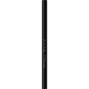
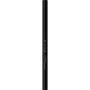

商品の特徴
●軽い力でもスルスルとなめらかに描ける、柔らかな描き心地＆ぴったりと密着して、にじみにくく、落ちにくい、レアタッチ＆ハイフィット処方。
●１．５ｍｍ極細芯
●くっきり濃い発色
●汗・水・涙に強い、ウォータープルーフタイプです。
●皮脂・こすれに強い、スマッジプルーフタイプです。
- 成分・分量
- 【成分】
メチルトリメチコン、トリメチルシロキシケイ酸、ポリエチレン、ジフェニルシロキシフェニルトリメチコン、カルナウバロウ、ペンタイソステアリン酸ジペンタエリスリチル、ジメチコン、キャンデリラロウ、シリカ、トコフェロール、メタクリル酸メチルクロスポリマー、リンゴ酸ジイソステアリル、パラフィン、マイクロクリスタリンワックス、（＋／－）グンジョウ、マイカ、酸化チタン、酸化鉄、水酸化Ａｌ
- 用法及び用量
- 【使用方法】
●一度繰り出した芯は戻りません。ご使用後は残りの芯を出したままキャップをしめてください。
●芯を出しすぎると折れる原因となりますので、１ｍｍ程度繰り出して軽いタッチでラインを描いてください。
 
